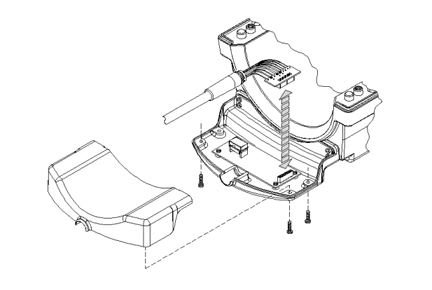

- 00000018WIA3027DE20GYZ
- id_131071513.0
- Aug 29, 2019 1:57:25 AM
HD T/R Quad Extremity Coil Troubleshooting
Personnel Requirements
| Required Persons | Procedure |
| 1 | 15 mins |
Overview
The following tips can be used to troubleshoot common problems with the HD T/R Quad Extremity Coil by Invivo.
Tools and Test Equipment
-
Standard Toolkit
-
Digital Multimeter
Procedure
Receiving No Signal
Problem:
You are unable to pre-scan or are scanning and yet receiving no signal.
Possible Solution:
-
Verify that you have selected the appropriate system coil selection. Refer to the Operators Manual for additional information.
-
Verify the green light above Port A is illuminated. This indicates the coil is properly plugged into the system.
-
Verify that the landmark is correct and that the cradle has not unlatched.
-
Verify that the scan locations and any FOV offsets are correct.
-
Perform a Continuity Check on the external cable using the instructions detailed in HD T/R Quad Extremity Coil FRUs and Replacements (to be performed by a GE authorized Service Engineer only).
-
Verify that the coil is positioned with the cable exiting towards the bore and that the system and coil polarity match.
The polarity of the MR system may be reversed. In such instances, the polarity of the coil will need to be reversed. To easily check the polarity, reverse the orientation of the coil so that the foot chimney of the coil is directed away from the magnet. Run the SNR protocol. If the SNR value is within 5% of the target, the coil’s polarity needs to be reversed. This change can be made in the field by a GE authorized Service Engineer in conjunction with Invivo support. If the SNR value is less than 95% of the target value, there may be a problem with the Invivo coil. Contact GE for further assistance.
If you still cannot get a signal, try to scan (transmit and receive) with the body coil. For this test, be sure to remove the imaging coil from the magnet bore before you scan with the body coil. If you still receive no signal the problem probably lies with your MR system. If the scan completes successfully, there is probably a problem with the Invivo coil. Contact GE for further assistance. If you are unable to scan with the substitute coil, there may be a system problem related to this particular coil type.
Image Quality
Problem:
The ratio obtained in the periodic quality assurance check is not greater than 85%, or the image quality is not what you expect it should be given the parameters selected.
Possible Solution:
-
Review the selected protocol. If you are performing the Periodic Quality Assurance, be sure your protocol is identical to the protocol provided in your Systems Recommended Protocols. If you are performing diagnostic images, you may need to increase NEX or FOV.
-
Perform a Continuity Check on the external cable using the instructions detailed in External Cable Wear of the HD T/R Quad Extremity Coil Replacements document (to be performed by a GE authorized Service Engineer only).
-
Verify that there are no loops in the cables.
-
Verify that there are no metal or ferromagnetic objects close to the coil, patient or magnet (i.e., safety pin, hair pin).
-
Verify that the coil is properly positioned.
-
Verify that your center frequency is within the frequency adjustment range for your system.
-
Verify that the R1, R2 and TG values from the pre-scan are within normally expected ranges.
Cleaning the electrical contacts that connect the upper and lower halves with Isopropyl Alcohol and a cotton swab has been demonstrated to improve the coil’s SNR on occasion.
If you have not done so already, perform a system Quality Assurance phantom test. If the values you obtain do not fall within normal operating parameters, investigate this further by performing a phantom scan with the body coil. For this test, be sure to remove the imaging coil from the magnet bore before you scan with the body coil. If you still have the same problems, there is probably an MR system problem. If the body coil scan is satisfactory, acquire a scan using both another coil of the exact same type plugged into the same system port (port A). If the image quality is visibly improved, there may be a problem with the Invivo coil. Contact GE for further assistance. If the image quality still suffers, there may be a system problem related to imaging with this type of coil.
Artifacts
Problem:
There is a black line or signal void on the image.
Possible Solution:
Verify that there is no metal present in the area being scanned in or on the patient.
Problem:
Some or all of the images appear shaded or exhibit uneven signal or banding.
Possible Solution:
Confirm that no metallic objects are located nearby, outside the FOV. This is especially important on images utilizing Fat Saturation.
If Fat Saturation is being used, verify that the CFA fine adjustment has been optimized.
External Cable Wear
Problem:
The system will not recognize the coil or scan with the coil attached.
Possible Solution:
Perform the Cable Continuity Check Procedure as follows:

Do not insert the DMM prods into the center pins of the RF coaxial cables!
1. Select the OHMMETTER function on the Digital Multi-meter (DMM).
2. Using the DMM, verify continuity of the cable by performing the following operations on the system connector (shown in Figure 1):
-
A continuity check from A1 to A2 pins.
-
A continuity check from M9 to M10 pins.
3. Remove six (6) brass screw from the underside of the cable connect housing and unplug cable from PCB, see Figure 2.

4. Access reference points on exposed interconnect PCB.
Perform continuity checks on the following reference points from the interconnect PCB to the system connector block (shown above).
| Interconnect PCB | System connector |
| MC-1 | C1 |
| REF LOAD | H3 |
| TX | F2 |
| PA +10Vdc | M3 |
| MC BIAS | J1 |
| COIL ID | M7 |
| COIL ID RTN | M8 |
5. Flex the cable while checking to test for intermittent open and short conditions in the cable.
6. If the cable fails any of the tests, replace the cable assembly.
If the cable passes the tests, plug the interconnect PCB back into the Preamp PCB and replace underside with the six (6) brass screws. Reconnect coil to the system and attempt scan. If the problem persists, replace HD T/R Quad Extremity coil.
Mechanical Parts Wear
See HD T/R Quad Extremity Coil FRUs and Replacements for replacement part numbers if there are any problems associated with securing the coil's top housing or if the lateral adjustment or the latch mechanism does not operate properly.